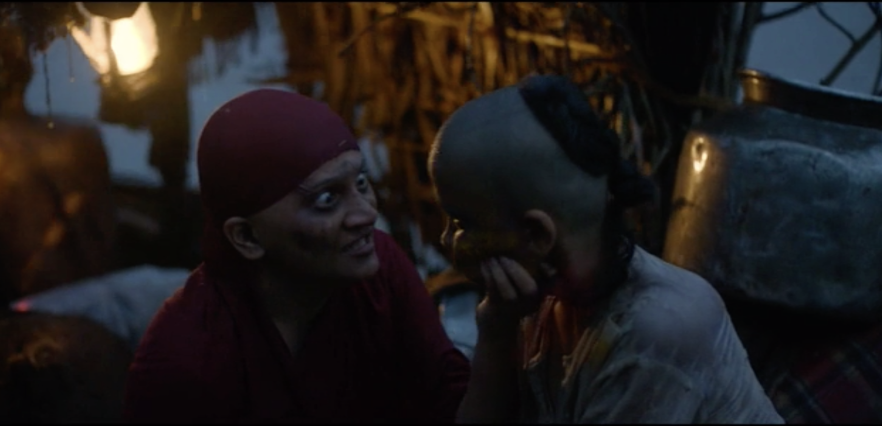
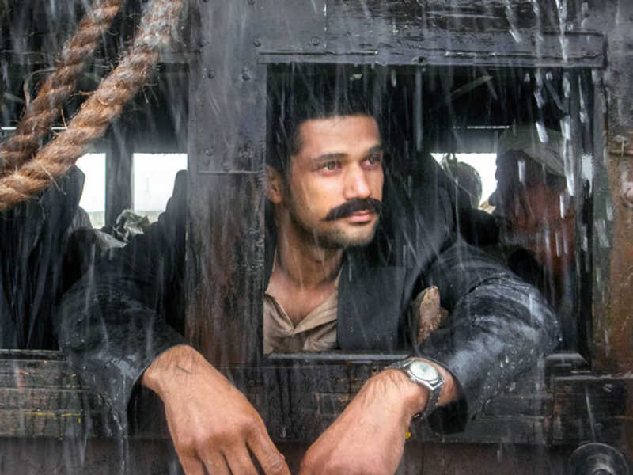
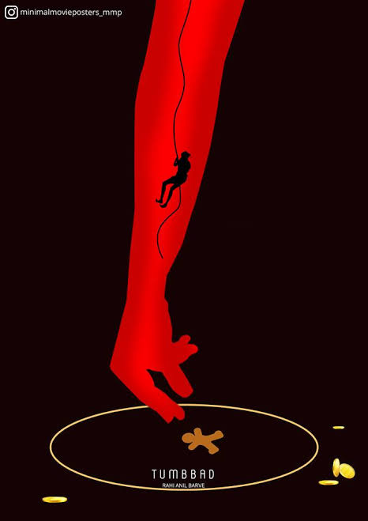

1. Introduction:
According to Tumbbad, the myth of Hastar goes like this: The Goddess of Prosperity created the world and gave birth to 16 crore gods and goddesses. The Earth🌏 was her womb and she had vast reserves of gold and grain in her womb. Her firstborn, Hastar, was her favorite. He got control of all the gold 🪙. His greed didn't stop there and he also wanted all the grains but this time his siblings resisted this. The rest of the siblings declared war against Hastar and almost killed him. Hastar's mother saved him before he could get killed and took him back to her womb. From now on, no one would worship Hastar and even uttering his name was banned. Seems like a happy ending but it doesn't end here. Several years later, a family in Tumbbad village decided to worship🛐 Hastar. What happened after that is the plot of the movie.

2. The Greed:
Greed is the recurrent theme of the movie and the movie beautifully stuck on with its theme and never deviated from it. Vinayak Rao (small boy in the above picture) is the protaganist in the movie. He is a descendant of the family who worshiped Hastar. Sarkar, an insanely rich guy is his father and we can see that Vinyak, his mother and his brother stay away from his father. After the death of Sarkar, Vinyak's mom decides to leave the Tumbbad village along with her sons. She also brings a gold coin🪙 which she probably took from Hastar statue in the family's mansion. Vinyak's brother dies unfortunately but anyways they stick on to their plan and fled the place. Vinyak pesters his mom that they shouldn't leave the village and should live in their huge mansion. He mainly insisted that they should search for Hastar's gold treasure. His mom tells him that this single gold coin she has is enough but greedy Vinyak adamatly disagrees. Here we first get see Vinyak Rao's greed. Later he promises to his mom he will never visit Tumbbad village again. But can a promise stop greedy Vinayak?
3. The Return of Vinyak Rao:
Yup greedy Vinyak (Vinyak is all grown up) returns back to Tumbbad in search of Hastar's gold treasure after several years. Does he find it? Who is that old grandma shown in the beginning? What actually prevents people from obtaining Hastar's treasure? Does Hastar gold treasure exist or is it a myth? The rest of the story is the actual main plot of the movie and dives deep into the greed theme. It also explores how immortality is not a boone but a bane.
4. Conlusion:
A very good picture which I found from the internet to end my review and also to trigger the interest in you the reader to watch the movie. To know what this picture is and to understand it, you need watch this movie. The movie's cinematography is also amazing and I highly highly recommend you to watch this movie if you haven't. This movie also reminded me of stalker 1 game.